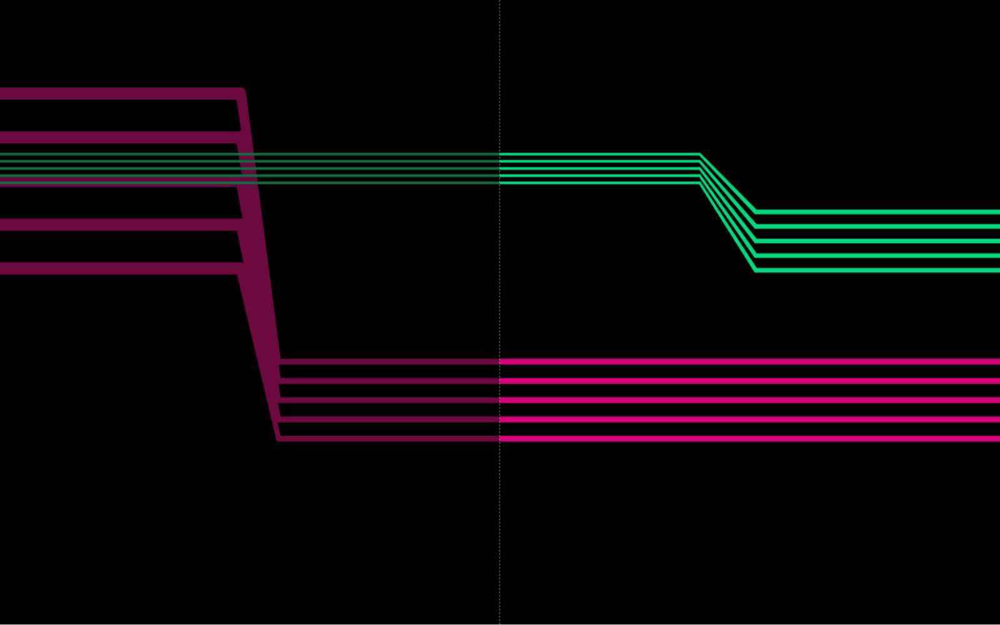
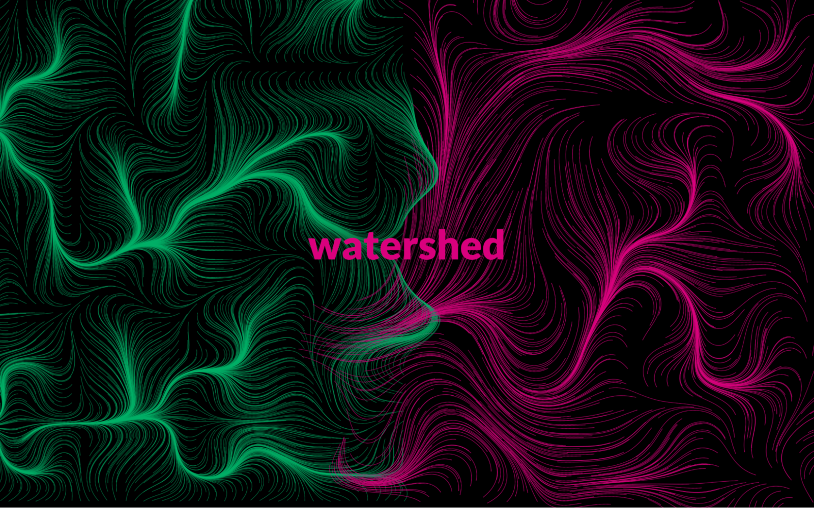
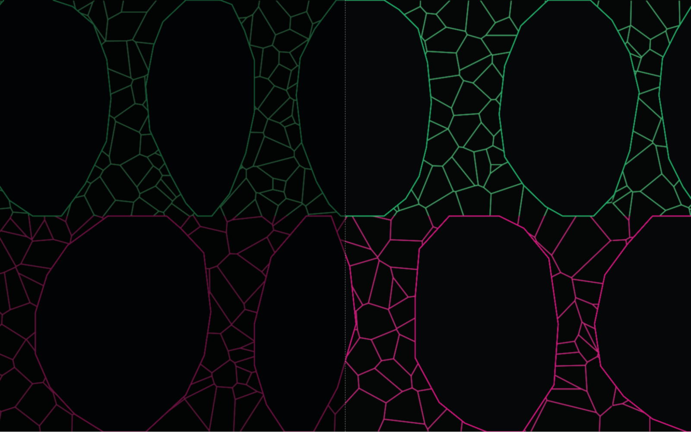
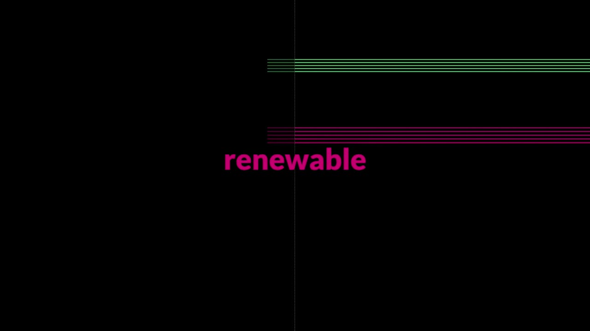

SYNTAX
Project Description
SYNTAX questions technological idealism in an age of ecological disruption and data-driven exploitation. Widely misused technology continues to cause pollution, habitat destruction, global warming, and disinformation. Like two sides of the same coin it is responsible for immeasurable prosperity and immeasurable suffering. It threatens all life on the planet, yet most humans depend on it.
To explore this question the composers have programmed the computer to program themselves. By deliberately coding and submitting to an “inversion of control” they evoke the warnings of media theorists like Douglas Rushkoff, that we risk a future wherein our behavior might be irreversibly dictated by the algorithms in the software we use instead of by our own volition. SYNTAX is a performance piece that parallels the dilemmas we face from two sides of the same coin.


A still image from SYNTAX: Renewable, December 2021
The collaboration includes a series of eight animated, graphic scores designed to guide the two composers through a generative narrative of improvised sound. This inverts the usual practice of creating visuals in response to sound by creating music in response to visuals. The scores that the artists read are designed as functional symbolism representing a set of rules that suggest musical ideas, sound design techniques, and timed phrases. The scores are regenerated each time the application is executed so that every performance is distinct.


A still image from SYNTAX: Watershed, December 2021
The software engineered to generate the graphic scores provides information to the performers in the form of animated and color coded graphics. An additional script was developed to navigate through the movements, display the titles, and transition between each piece. Each movement was written with its own graphical language, algorithms, and directives while maintaining visual and conceptual themes to work as a whole. The composers perform the piece using a combination of hardware synthesizers and software independent from the scores including sequences programmed using the Tidal Cycles live coding environment and manipulated in real time. It is the intent of the human composers for the audience to experience the projected graphic scores and musical performance together.


A still image from SYNTAX: Petrochemical, December 2021
Type of submission
Option 1: “New NIME” - traditional NIME music sessions aimed at showcasing pieces performed or composed with new interfaces for musical expression.
Program Notes
SYNTAX questions technological idealism in an age of ecological disruption and data-driven exploitation. Widely misused technology continues to cause pollution, habitat destruction, global warming, and disinformation. Like two sides of the same coin it is responsible for immeasurable prosperity and immeasurable suffering. It threatens all life on the planet, yet most humans depend on it.
To explore this question the composers have programmed the computer to program themselves. By deliberately coding and submitting to an “inversion of control” they evoke the warnings of media theorists like Douglas Rushkoff, that we risk a future wherein our behavior might be irreversibly dictated by the algorithms in the software we use instead of by our own volition. SYNTAX is a performance piece that parallels the dilemmas we face from two sides of the same coin.
Media
The following 15 minute video includes excerpts from four of the eight movements within SYNTAX including RENEWABLE, TOXIC, PETROCHEMICAL, and WATERSHED.

▶SYNTAX [excerpts including RENEWABLE, TOXIC, PETROCHEMICAL, and WATERSHED]
Mike Hodnick and John C.S. Keston
Ethics Statement
SYNTAX aims to probe the ways in which human beings are exploiting and being exploited by technological advances. By submitting to musical manipulations from software designed to do exactly that through generative, animated, graphic scores the authors hope to raise questions about the ethics surrounding data collection and data exploitation, climate chaos, and mass extinction. Many of us benefit from technological advancements in medicine, information systems, communications, and transportation. However, the consequences of these advancements disproportionately affect those with less means, misusing data, polluting ecosystems, and usurping cultural traditions.
One of the composers for the project is affiliated with a prominent Catholic University and, as such, indirectly funded by the school whose mission statement reads:
Inspired by Catholic intellectual tradition, the University of [redacted] educates students to be morally responsible leaders who think critically, act wisely, and work skillfully to advance the common good.
Despite the mission and the positive impacts the University makes, the history of atrocities committed by the Catholic Church cannot be ignored including, but not limited to, the persecution of Jews and Muslims, horrific sexual misconduct, intolerance of people with LGBTQA+ identities, and the denial of women’s reproductive rights. This project does not directly address these concerns, but the authors stand firmly against these and other beliefs and practices perpetuated by the Catholic Church.
Acknowledgements
The authors would like to thank Pauline Oliveros and Piotr Szyhalski for their inspiration and guidance.